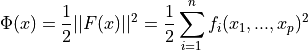
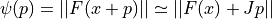
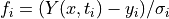
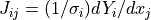
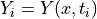
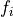
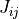
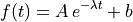

Nonlinear Least Squares fit¶
Overview¶
GSL Shell provides support for nonlinear least squares fitting for user-defined data and functions.
The problem of multidimensional nonlinear least-squares fitting requires the minimization of the squared residuals of n functions, fi, in p parameters, xi,

All algorithms proceed from an initial guess using the linearization,

where x is the initial point, p is the proposed step and J is the Jacobian matrix Jij = dfi / dxj. Additional strategies are used to enlarge the region of convergence. These include requiring a decrease in the norm ||F|| on each step or using a trust region to avoid steps which fall outside the linear regime.
To perform a weighted least-squares fit of a nonlinear model Y(x,t) to data (ti, yi) with independent Gaussian errors σi, use function components of the following form

Note that the model parameters are denoted by x in this chapter since the non-linear least-squares algorithms are described geometrically (i.e. finding the minimum of a surface). The independent variable of any data to be fitted is denoted by t.
With the definition above the Jacobian is , where .
Performing a non-linear fit¶
To perform a non-linear fit with GSL Shell you should define before a function that computes the values  and  for some given values of the parameters. The details about the function are given in the following section.
User defined function¶
The user supplied function for the non-linear fit should calculates the values and the elements of the Jacobian for a given set values of the parameters. The function is called with the following calling convention:
function fdf(x, f, J)
-- user defined function
...
end
where the function fdf is the function that you provide, x is column matrix that contains the P parameters, f is a column matrix of size N used to store the values and J is a matrix of size N x P whose generic element is the derivative of with respect of the j-th fit parameter.
In some cases the function can be called with f or J equal to nil because their values does not need to be computed. This imply that the user defined function should always check the argument f and J and set their values only if the variable is not nil.
For example let us suppose that we want to fit the function

where A, λ and b are the fit parameters. Let us suppose also that we have samples the data at N different values of t = t1, …, ti, …, tN. If this case the vector x will have size P, f size N and J size N x P. The function for the non-linear fit can be therefore defined as follows:
use 'math'
function fdf(x, f, J)
for i=1, n do
local A, lambda, b = x[1], x[2], x[3]
local t, y, sig = i-1, yrf[i], sigrf
local e = exp(- lambda * t)
if f then f[i] = (A*e+b - y)/sig end
if J then
J:set(i, 1, e / sig)
J:set(i, 2, - t * A * e / sig)
J:set(i, 3, 1 / sig)
end
end
end
You can note in the definition above the we have chosen to store the three parameters A, λ and b in this exact order. In general you should choose an order to pack the parameters into the vector x.
Note also that the assignment to the elements of the vector f and the matrix J are done only if their respective variables f and J are not nil.
Once that the function is defined the most delicate work is done and you should create a non-linear fit solver of the appropriate size N and P with the function num.nlinfit(). Once the non-linear fit solver is defined you indicate the function fdf and the values using the method set(). Then you should iterate the search procedure with the method iterate() and test the convergence with the method test().
Here a complete example:
use 'math'
use 'graph'
n = 40
sigrf = 0.1
function fdf(x, f, J)
for i=1, n do
A, lambda, b = x[1], x[2], x[3]
t, y, sig = i-1, yrf[i], sigrf
e = exp(- lambda * t)
if f then f[i] = (A*e+b - y)/sig end
if J then
J:set(i, 1, e / sig)
J:set(i, 2, - t * A * e / sig)
J:set(i, 3, 1 / sig)
end
end
end
function model(x, t)
A, lambda, b = x[1], x[2], x[3]
return A * exp(- lambda * t) + b
end
xref = matrix.vec {5, 0.1, 1}
r = rng.new()
yrf = matrix.new(n, 1, |i| model(xref, i-1) + rnd.gaussian(r, 0.1))
s = num.nlinfit {n= n, p= 3}
s:set(fdf, matrix.vec {1, 0, 0})
print(s.x, s.chisq)
for i=1, 10 do
s:iterate()
print('ITER=', i, ': ', s.x, s.chisq)
if s:test(0, 1e-8) then break end
end
p = plot('Non-linear fit example')
pts = ipath(iter.sequence(function(i) return i-1, yrf[i] end, n))
fitln = fxline(function(t) return model(s.x, t) end, 0, n-1)
p:addline(pts, 'blue', {{'marker', size=5}})
p:addline(fitln)
p.clip = false
p.pad = true
p:show()
and here the resulting plot where we have superposed the simulated points with the best fit function.
Non-linear fit of function A exp(a t) + b with Gaussian noise¶
Solver class definition¶
- num.nlinfit(spec)¶
Create a non-linear fit solver object. The argument
specshould be a table in the form{n = ..., p = ...}where the fields n and p indicate, respectively the number of observations and the number of fit parameters.
- class num.NLinFit¶
Non-linear fit solver class.
- set(fdf, x0)¶
Associate the non-linear fit solver with the user-defined function
fdfand set the initial condition for the fit parameters tox0. The definition of the functionfdfis given in the section above.
- iterate()¶
Advance the solver of a single step. It does return
continueif it did not reach the optimal point andsuccessotherwise.
- test(eps_abs, eps_err)¶
Check if the the search converged for the given absolute error
eps_absand relative erroreps_rel.
- x¶
Returns the current vector with the fit parameters.
- f¶
Returns a vector with the fit residuals.